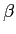
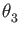
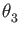
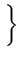
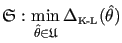
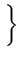
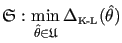

Next: Optimisation of a single Up: Model-free theory Previous: The model-free models Contents Index
The optimisation of the parameters of an arbitrary model is dependent on a function f
which takes the current parameter values

 n
and returns a single real value
f (
n
and returns a single real value
f ( )
)  corresponding to position
corresponding to position  in the n
-dimensional space. For it is that single value which is minimised as
in the n
-dimensional space. For it is that single value which is minimised as
| (theparentequation.23) |
where
 is the parameter vector which is equal to the argument which minimises the function f (
is the parameter vector which is equal to the argument which minimises the function f ( )
. In model-free analysis f (
)
. In model-free analysis f ( )
is the chi-squared equation
)
is the chi-squared equation
where i
is the summation index,
Ri
is the experimental relaxation data which belongs to the data set R and includes the
R1
,
R2
, and NOE values at all field strengths,
Ri( )
is the back calculated relaxation data belonging to the set R(
)
is the back calculated relaxation data belonging to the set R( )
, and
)
, and  is the experimental error. For the optimisation of the model-free parameters while the diffusion tensor is held fixed, the summation index ranges over the relaxation data of an individual spin. If the diffusion parameters are optimised simultaneously with the model-free parameters the summation index ranges over all relaxation data of all selected spins of the macromolecule.
is the experimental error. For the optimisation of the model-free parameters while the diffusion tensor is held fixed, the summation index ranges over the relaxation data of an individual spin. If the diffusion parameters are optimised simultaneously with the model-free parameters the summation index ranges over all relaxation data of all selected spins of the macromolecule.
Given the current parameter values the model-free function provided to the algorithm will calculate the value of the model-free spectral density function J( )
at the five frequencies which induce NMR relaxation by using Equations (8.6) and (8.7). The theoretical
R1
,
R2
, and NOE values are then back-calculated using Equations (8.2a), (8.2b), (8.2c), and (8.5). Finally, the chi-squared value is calculated using Equation (8.24).
)
at the five frequencies which induce NMR relaxation by using Equations (8.6) and (8.7). The theoretical
R1
,
R2
, and NOE values are then back-calculated using Equations (8.2a), (8.2b), (8.2c), and (8.5). Finally, the chi-squared value is calculated using Equation (8.24).
The problem of finding the minimum is complicated by the fact that optimisation algorithms are blind to the curvature of the complete space. Instead they rely on topological information about the current and, sometimes, the previous parameter positions in the space. The techniques use this information to walk iteratively downhill to the minimum. Very few optimisation algorithms rely solely on the function value, conceptually the height of the space, at the current position. Most techniques also utilise the gradient at the current position. Although symbolically complex in the case of model-free analysis, the gradient can simply be calculated as the vector of first partial derivatives of the chi-squared equation with respect to each model-free parameter. The gradient is supplied as a second function to the algorithm which is then utilised in diverse ways by different optimisation techniques. The function value together with the gradient can be combined to construct a linear or planar description of the space at the current parameter position by first-order Taylor series approximation
where fk
is the function value at the current parameter position  ,
,
 fk
is the gradient at the same position, and x
is an arbitrary vector. By accumulating information from previous parameter positions a more comprehensive geometric description of the curvature of the space can be exploited by the algorithm for more efficient optimisation.
fk
is the gradient at the same position, and x
is an arbitrary vector. By accumulating information from previous parameter positions a more comprehensive geometric description of the curvature of the space can be exploited by the algorithm for more efficient optimisation.
The best and most comprehensive description of the space is given by the quadratic approximation of the topology which is generated from the combination of the function value, the gradient, and the Hessian. From the second-order Taylor series expansion the quadratic model of the space is
where
 fk
is the Hessian, which is the symmetric matrix of second partial derivatives of the function, at the position
fk
is the Hessian, which is the symmetric matrix of second partial derivatives of the function, at the position  . As the Hessian is computationally expensive a number of optimisation algorithms try to approximate it.
. As the Hessian is computationally expensive a number of optimisation algorithms try to approximate it.
To produce the gradient and Hessian required for model-free optimisation a large chain of first and second partial derivatives needs to be calculated. Firstly the partial derivatives of the spectral density functions (8.6) and (8.7) are necessary. Then the partial derivatives of the relaxation equations (8.2a) to (8.2c) followed by the NOE equation (8.5) are needed. Finally the partial derivative of the chi-squared formula (8.24) is required. These first and second partial derivatives, as well as those of the components of the Brownian diffusion correlation function for non-isotropic tumbling, are presented in Chapter 11.
Prior to minimisation, all optimisation algorithms investigated require a starting position within the model-free space. This initial parameter vector is found by employing a coarse grid search - chi-squared values at regular positions spanning the space are calculated and the grid point with the lowest value becomes the starting position. The grid search itself is an optimisation technique. As it is computationally expensive the number of grid points needs to be kept to a minimum. Hence the initial parameter values are a rough and imprecise approximation of the local minimum. Due to the complexity of the curvature of the model-free space, the grid point with the lowest chi-squared value may in fact be on the opposite side of the space to the local minimum.
Once the starting position has been determined by the grid search the optimisation algorithm can be executed. The number of algorithms developed within the mathematical field of optimisation is considerable. They can nevertheless be grouped into one of a small number of major categories based on the fundamental principles of the technique. These include the line search methods, the trust region methods, and the conjugate gradient methods. For more details on the algorithms described below see Nocedal and Wright (1999).
The defining characteristic of a line search algorithm is to choose a search direction pk
and then to find the minimum along that vector starting from  (Nocedal and Wright, 1999). The distance travelled along pk
is the step length
and the parameter values for the next iteration are
(Nocedal and Wright, 1999). The distance travelled along pk
is the step length
and the parameter values for the next iteration are
|  | (theparentequation.27) |
The line search algorithm determines the search direction pk whereas the value of is found using an auxiliary step-length selection algorithm.
One of the simplest line search methods is the steepest descent algorithm. The search direction is simply the negative gradient,
pk = -  fk
, and hence the direction of maximal descent is always followed. This method is inefficient - the linear rate of convergence requires many iterations of the algorithm to reach the minimum and it is susceptible to being trapped on saddle points within the space.
fk
, and hence the direction of maximal descent is always followed. This method is inefficient - the linear rate of convergence requires many iterations of the algorithm to reach the minimum and it is susceptible to being trapped on saddle points within the space.
The coordinate descent algorithms are a simplistic group of line search methods whereby the search directions alternate between vectors parallel to the parameter axes. For the back-and-forth coordinate descent the search directions cycle in one direction and then back again. For example for a three parameter model the search directions cycle
, ,,
,, ,,
,, ,
, which means that each parameter of the model is optimised one by one. The method becomes less efficient when approaching the minimum as the step length
continually decreases (ibid.).
,
, which means that each parameter of the model is optimised one by one. The method becomes less efficient when approaching the minimum as the step length
continually decreases (ibid.).
The quasi-Newton methods begin with an initial guess of the Hessian and update it at each iteration using the function value and gradient. Therefore the benefits of using the quadratic model of (8.26) are obtained without calculating the computationally expensive Hessian. The Hessian approximation Bk
is updated using various formulae, the most common being the BFGS formula (Broyden, 1970; Goldfarb, 1970; Shanno, 1970; Fletcher, 1970). The search direction is given by the equation
pk = - Bk-1 fk
. The quasi-Newton algorithms can attain a superlinear rate of convergence, being superior to the steepest descent or coordinate descent methods.
fk
. The quasi-Newton algorithms can attain a superlinear rate of convergence, being superior to the steepest descent or coordinate descent methods.
The most powerful line search method when close to the minimum is the Newton search direction
This direction is obtained from the derivative of (8.26) which is assumed to be zero at the minimum of the quadratic model. The vector pk points from the current position to the exact minimum of the quadratic model of the space. The rate of convergence is quadratic, being superior to both linear and superlinear convergence. The technique is computationally expensive due to the calculation of the Hessian. It is also susceptible to failure when optimisation commences from distant positions in the space as the Hessian may not be positive definite and hence not convex, a condition required for the search direction both to point downhill and to be reasonably oriented. In these cases the quadratic model is a poor description of the space.
A practical Newton algorithm which is robust for distant starting points is the Newton conjugate gradient method (Newton-CG). This line search method, which is also called the truncated Newton algorithm, finds an approximate solution to Equation (8.28) by using a conjugate gradient (CG) sub-algorithm. Retaining the performance of the pure Newton algorithm, the CG sub-algorithm guarantees that the search direction is always downhill as the method terminates when negative curvature is encountered. This algorithm is similar to the Newton-Raphson-CG algorithm implemented within Dasha. Newton optimisation is sometimes also known as the Newton-Raphson algorithm and, as documented in the source code, the Newton algorithm in Dasha is coupled to a conjugate gradient algorithm. The auxiliary step-length selection algorithm in Dasha is undocumented and may not be employed.
Once the search direction has been determined by the above algorithms the minimum along that direction needs to be determined. Not to be confused with the methodology for determining the search direction pk
, the line search itself is performed by an auxiliary step-length selection algorithm to find the value
. A number of step-length selection methods can be used to find a minimum along the line
 + pk
, although only two will be investigated. The first is the backtracking line search of Nocedal and Wright (1999). This method is inexact - it takes a starting step length
and decreases the value until a sufficient decrease in the function is found. The second is the line search method of Moré and Thuente (1994). Designed to be robust, the MT algorithm finds the exact minimum along the search direction and guarantees sufficient decrease.
+ pk
, although only two will be investigated. The first is the backtracking line search of Nocedal and Wright (1999). This method is inexact - it takes a starting step length
and decreases the value until a sufficient decrease in the function is found. The second is the line search method of Moré and Thuente (1994). Designed to be robust, the MT algorithm finds the exact minimum along the search direction and guarantees sufficient decrease.
In the trust region class of algorithms the curvature of the space is modelled quadratically by (8.26). This model is assumed to be reliable only within a region of trust defined by the inequality
 p 
p   where p
is the step taken by the algorithm and
where p
is the step taken by the algorithm and  is the radius of the n
-dimensional sphere of trust (Nocedal and Wright, 1999). The solution sought for each iteration of the algorithm is
is the radius of the n
-dimensional sphere of trust (Nocedal and Wright, 1999). The solution sought for each iteration of the algorithm is
where mk(p)
is the quadratic model, Bk
is a positive definite matrix which can be the true Hessian as in the Newton model or an approximation such as the BFGS matrix, and
 p
is the Euclidean norm of p
. The trust region radius
p
is the Euclidean norm of p
. The trust region radius  is modified dynamically during optimisation - if the quadratic model is found to be a poor representation of the space the radius is decreased whereas if the quadratic model is found to be reasonable the radius is increased to allow larger, more efficient steps to be taken.
is modified dynamically during optimisation - if the quadratic model is found to be a poor representation of the space the radius is decreased whereas if the quadratic model is found to be reasonable the radius is increased to allow larger, more efficient steps to be taken.
The Cauchy point algorithm is similar in concept to the steepest descent line search algorithm. The Cauchy point is the point lying on the gradient which minimises the quadratic model subject to the step being within the trust region. By iteratively finding the Cauchy point the local minimum can be found. The convergence of the technique is inefficient, being similar to that of the steepest descent algorithm.
In changing the trust region radius the exact solutions to (8.29) map out a curved trajectory which starts parallel to the gradient for small radii. The end of the trajectory, which occurs for radii greater than the step length, is the bottom of the quadratic model. The dogleg algorithm attempts to follow a similar path by first finding the minimum along the gradient and then finding the minimum along a trajectory from the current point to the bottom of the quadratic model. The minimum along the second path is either the trust region boundary or the quadratic solution. The matrix Bk of (8.29) can be the BFGS matrix, the unmodified Hessian, or a Hessian modified to be positive definite.
Another trust region algorithm is Steihaug's modified conjugate gradient approach (Steihaug, 1983). For each step k an iterative technique is used which is almost identical to the standard conjugate gradient procedure except for two additional termination conditions. The first is if the next step is outside the trust region, the second is if a direction of zero or negative curvature is encountered.
An almost exact solution to (8.29) can be found using an algorithm described in Nocedal and Wright (1999). This exact trust region algorithm aims to precisely find the minimum of the quadratic model mk
of the space within the trust region  . Any matrix Bk
can be used to construct the quadratic model. However, the technique is computationally expensive.
. Any matrix Bk
can be used to construct the quadratic model. However, the technique is computationally expensive.
The conjugate gradient algorithm (CG) was originally designed as a mathematical technique for solving a large system of linear equations Hestenes and Stiefel (1952), but was later adapted to solving nonlinear optimisation problems (Fletcher and Reeves, 1964). The technique loops over a set of directions p0 , p1 , , pn which are all conjugate to the Hessian (Nocedal and Wright, 1999), a property defined as
| (theparentequation.30) |
By performing line searches over all directions pj
the solution to the quadratic model (8.26) of the position  will be found in n
or less iterations of the CG algorithm where n
is the total number of parameters in the model. The technique performs well on large problems with many parameters as no matrices are calculated or stored. The algorithms perform better than the steepest descent method and preconditioning of the system is used to improve optimisation. A number of preconditioned techniques will be investigated including the Fletcher-Reeves algorithm which was the original conjugate gradient optimisation technique (Fletcher and Reeves, 1964), the Polak-Ribière method (Polak and Ribière, 1969), a modified Polak-Ribière method called the Polak-Ribière + method (Nocedal and Wright, 1999), and the Hestenes-Stiefel algorithm which originates from a formula in Hestenes and Stiefel (1952). As a line search is performed to find the minimum along each conjugate direction both the backtracking and Moré and Thuente auxiliary step-length selection algorithms will be tested with the CG algorithms.
will be found in n
or less iterations of the CG algorithm where n
is the total number of parameters in the model. The technique performs well on large problems with many parameters as no matrices are calculated or stored. The algorithms perform better than the steepest descent method and preconditioning of the system is used to improve optimisation. A number of preconditioned techniques will be investigated including the Fletcher-Reeves algorithm which was the original conjugate gradient optimisation technique (Fletcher and Reeves, 1964), the Polak-Ribière method (Polak and Ribière, 1969), a modified Polak-Ribière method called the Polak-Ribière + method (Nocedal and Wright, 1999), and the Hestenes-Stiefel algorithm which originates from a formula in Hestenes and Stiefel (1952). As a line search is performed to find the minimum along each conjugate direction both the backtracking and Moré and Thuente auxiliary step-length selection algorithms will be tested with the CG algorithms.
The Newton search direction, used in both the line search and trust region methods, is dependent on the Hessian being positive definite for the quadratic model to be convex so that the search direction points sufficiently downhill. This is not always the case as saddle points and other non-quadratic features of the space can be problematic. Two classes of algorithms can be used to handle this situation. The first involves using the conjugate gradient method as a sub-algorithm for solving the Newton problem for the step k . The Newton-CG line search algorithm described above is one such example. The second class involves modifying the Hessian prior to, or at the same time as, finding the Newton step to guarantee that the replacement matrix Bk is positive definite. The convexity of Bk is ensured by its eigenvalues all being positive. The performance of two of these methods within the model-free space will be investigated.
The first modification uses the Cholesky factorisation of the matrix Bk
, initialised to the true Hessian, to test for convexity (Algorithm 6.3 of Nocedal and Wright (1999)). If factorisation fails the matrix is not positive definite and a constant  times the identity matrix I
is then added to Bk
. The constant originates from the Robbins norm of the Hessian
times the identity matrix I
is then added to Bk
. The constant originates from the Robbins norm of the Hessian

 fk
fk and is steadily increased until the factorisation is successful. The resultant Cholesky lower triangular matrix L
can then be used to find the approximate Newton direction. If
and is steadily increased until the factorisation is successful. The resultant Cholesky lower triangular matrix L
can then be used to find the approximate Newton direction. If  is too large the convergence of this technique can approach that of the steepest descent algorithm.
is too large the convergence of this technique can approach that of the steepest descent algorithm.
The second method is the Gill, Murray, and Wright (GMW) algorithm (Gill et al., 1981) which modifies the Hessian during the execution of the Cholesky factorisation
 fk = LILT
, where L
is a lower triangular matrix and D
is a diagonal matrix. Only a single factorisation is required. As rows and columns are interchanged during the algorithm the technique may be slow for large problems such as the optimisation of the model-free parameters of all spins together with the diffusion tensor parameters. The rate of convergence of the technique is quadratic.
fk = LILT
, where L
is a lower triangular matrix and D
is a diagonal matrix. Only a single factorisation is required. As rows and columns are interchanged during the algorithm the technique may be slow for large problems such as the optimisation of the model-free parameters of all spins together with the diffusion tensor parameters. The rate of convergence of the technique is quadratic.
Two other optimisation algorithms which cannot be classified within line search, trust region, or conjugate gradient categories will also be investigated. The first is the well known simplex optimisation algorithm. The technique is often used as the only the function value is employed and hence the derivation of the gradient and Hessian can be avoided. The simplex is created as an n -dimensional geometric object with n + 1 vertices. The first vertex is the starting position. Each of the other n vertices are created by shifting the starting position by a small amount parallel to one of unit vectors defining the coordinate system of the space. Four simple rules are used to move the simplex through the space: reflection, extension, contraction, and a shrinkage of the entire simplex. The result of these movements is that the simplex moves in an ameoboid-like fashion downhill, shrinking to pass through tight gaps and expanding to quickly move through non-convoluted space, eventually finding the minimum.
Key to these four movements is the pivot point, the centre of the face created by the n vertices with the lowest function values. The first movement is a reflection - the vertex with the greatest function value is reflected through the pivot point on the opposite face of the simplex. If the function value at this new position is less than all others the simplex is allowed to extend - the point is moved along the line to twice the distance between the current position and the pivot point. Otherwise if the function value is greater than the second highest value but less than the highest value, the reflected simplex is contracted. The reflected point is moved to be closer to the simplex, its position being half way between the reflected position and the pivot point. Otherwise if the function value at the reflected point is greater than all other vertices, then the original simplex is contracted - the highest vertex is moved to a position half way between the current position and the pivot point. Finally if none of these four movements yield an improvement, then the simplex is shrunk halfway towards the vertex with the lowest function value.
The other algorithm is the commonly used Levenberg-Marquardt algorithm (Marquardt, 1963; Levenberg, 1944) which is implemented in Modelfree4, Dasha, and Tensor2. This technique is designed for least-squares problems to which the chi-squared equation (8.24) belongs. The key to the algorithm is the replacement of the Hessian with the Levenberg-Marquardt matrix
JTJ +  I
, where J
is the Jacobian of the system calculated as the matrix of partial derivatives of the residuals,
I
, where J
is the Jacobian of the system calculated as the matrix of partial derivatives of the residuals,
 > 0
is a factor related to the trust-region radius, and I
is the identity matrix. The algorithm is conceptually allied to the trust region methods and its performance varies finely between that of the steepest descent and the pure Newton step. When far from the minimum
> 0
is a factor related to the trust-region radius, and I
is the identity matrix. The algorithm is conceptually allied to the trust region methods and its performance varies finely between that of the steepest descent and the pure Newton step. When far from the minimum  is large and the algorithm takes steps close to the gradient; when in vicinity of the minimum
is large and the algorithm takes steps close to the gradient; when in vicinity of the minimum  heads towards zero and the steps taken approximate the Newton direction. Hence the algorithm avoids the problems of the Newton algorithm when non-convex curvature is encountered and approximates the Newton step in convex regions of the space.
heads towards zero and the steps taken approximate the Newton direction. Hence the algorithm avoids the problems of the Newton algorithm when non-convex curvature is encountered and approximates the Newton step in convex regions of the space.
To guarantee that the minimum will still be reached the implementation of constraints limiting the parameter values together with optimisation algorithms is not a triviality. For this to occur the space and its boundaries must remain smooth thereby allowing the algorithm to move along the boundary to either find the minimum along the limit or to slide along the limit and then move back into the centre of the constrained space once the curvature allows it. One of the most powerful approaches is the Method of Multipliers (Nocedal and Wright, 1999), also known as the Augmented Lagrangian. Instead of a single optimisation the algorithm is iterative with each iteration consisting of an independent unconstrained minimisation on a sequentially modified space. When inside the limits the function value is unchanged but when outside a penalty, which is proportional to the distance outside the limit, is added to the function value. This penalty, which is based on the Lagrange multipliers, is smooth and hence the gradient and Hessian are continuous at and beyond the constraints. For each iteration of the Method of Multipliers the penalty is increased until it becomes impossible for the parameter vector to be in violation of the limits. This approach allows the parameter vector  outside the limits yet the successive iterations ensure that the final results will not be in violation of the constraint.
outside the limits yet the successive iterations ensure that the final results will not be in violation of the constraint.
For inequality constraints, each iteration of the Method of Multipliers attempts to solve the quadratic sub-problem
where the function  is defined as
is defined as
| (theparentequation.32) |
In (8.31),  is the parameter vector;
is the Augmented Lagrangian function; k
is the current iteration of the Method of Multipliers;
is the parameter vector;
is the Augmented Lagrangian function; k
is the current iteration of the Method of Multipliers;  are the Lagrange multipliers which are positive factors such that, at the minimum
are the Lagrange multipliers which are positive factors such that, at the minimum
 ,
,
 f (
f ( ) =
) =  ci(
ci( )
;
)
;  > 0
is the penalty parameter which decreases to zero as
k
> 0
is the penalty parameter which decreases to zero as
k
 ;
;
 is the set of inequality constraints; and
ci(
is the set of inequality constraints; and
ci( )
is an individual constraint value. The Lagrange multipliers are updated using the formula
)
is an individual constraint value. The Lagrange multipliers are updated using the formula
| (theparentequation.33) |
The gradient of the Augmented Lagrangian is
 |
(theparentequation.34) |
and the Hessian is
![$\displaystyle \nabla^2 \mathfrak{L}_A(\theta, \lambda^k; \mu_k) = \nabla^2 f(\t...
...( \lambda_i^k - \frac{c_i(\theta)}{\mu_k} \right) \nabla^2 c_i(\theta) \right].$](img119.png) |
(theparentequation.35) |
The Augmented Lagrangian algorithm can accept any set of three arbitrary constraint functions c( )
,
)
,
 c(
c( )
, and
)
, and
 c(
c( )
. When given the current parameter values c(
)
. When given the current parameter values c( )
returns a vector of constraint values whereby each position corresponds to one of the model parameters. The constraint is defined as
ci
)
returns a vector of constraint values whereby each position corresponds to one of the model parameters. The constraint is defined as
ci  0
. The function
0
. The function
 c(
c( )
returns the matrix of constraint gradients and
)
returns the matrix of constraint gradients and
 c(
c( )
is the constraint Hessian function which should return the 3D matrix of constraint Hessians.
)
is the constraint Hessian function which should return the 3D matrix of constraint Hessians.
A more specific set of constraints accepted by the Method of Multipliers are bound constraints. These are defined by the function
| (theparentequation.36) |
where l
and u
are the vectors of lower and upper bounds respectively and  is the parameter vector. For example for model-free model m4
to place lower and upper bounds on the order parameter and lower bounds on the correlation time and chemical exchange parameters, the vectors are
is the parameter vector. For example for model-free model m4
to place lower and upper bounds on the order parameter and lower bounds on the correlation time and chemical exchange parameters, the vectors are
 |
(theparentequation.37) |
The default setting in the program relax is to use linear constraints which are defined as
where A
is an
m x n
matrix where the rows are the transposed vectors ai
of length n
; the elements of ai
are the coefficients of the model parameters;  is the vector of model parameters of dimension n
; b
is the vector of scalars of dimension m
; m
is the number of constraints; and n
is the number of model parameters. For model-free analysis, linear constraints are the most useful type of constraint as the correlation time
is the vector of model parameters of dimension n
; b
is the vector of scalars of dimension m
; m
is the number of constraints; and n
is the number of model parameters. For model-free analysis, linear constraints are the most useful type of constraint as the correlation time  can be restricted to being less than
can be restricted to being less than  by using the inequality
by using the inequality
 -
- 
 0
.
0
.
In rearranging (8.38) the linear constraint function c( )
returns the vector
A .
)
returns the vector
A .  - b
. Because of the linearity of the constraints the gradient and Hessian are greatly simplified. The gradient
- b
. Because of the linearity of the constraints the gradient and Hessian are greatly simplified. The gradient
 c(
c( )
is simply the matrix A
and the Hessian
)
is simply the matrix A
and the Hessian
 c(
c( )
is zero. For the parameters specific to individual spins the linear constraints in the notation of (8.38) are
)
is zero. For the parameters specific to individual spins the linear constraints in the notation of (8.38) are
 |
(theparentequation.39) |
Through the isolation of each individual element, the constraints can be see to be equivalent to
 |
To prevent the computationally expensive optimisation of failed models in which the internal correlation times minimise to infinity (d'Auvergne and Gooley, 2006), the constraint
 ,
, ,
, 2
2 was implemented. When the global correlation time is fixed the constraints in the matrix notation of (8.38) are
was implemented. When the global correlation time is fixed the constraints in the matrix notation of (8.38) are
 |
(theparentequation.41) |
However when the global correlation time  is one of the parameters being optimised the constraints become
is one of the parameters being optimised the constraints become
 |
(theparentequation.42) |
For the parameters of the diffusion tensor the constraints utilised are
 |
which in the matrix notation of (8.38) become
 |
(theparentequation.44) |
The upper limit of 200 ns on  prevents the parameter from heading towards infinity when model failure occurs (see d'Auvergne and Gooley (2006)). This can significantly decrease the computation time. To isolate the prolate spheroid the constraint
prevents the parameter from heading towards infinity when model failure occurs (see d'Auvergne and Gooley (2006)). This can significantly decrease the computation time. To isolate the prolate spheroid the constraint
| (theparentequation.45) |
is used whereas to isolate the oblate spheroid the constraint used is
| (theparentequation.46) |
Dependent on the model optimised, the matrix A and vector b are constructed from combinations of the above linear constraints.
Model scaling can have a significant effect on the optimisation algorithm - a poorly scaled model can cause certain techniques to fail. When two parameters of the model lie on very different numeric scales the model is said to be poorly scaled. For example in model-free analysis the order of magnitude of the order parameters is one whereas for the internal correlation times the order of magnitude is between 1e-12 to 1e-8 . Most effected are the trust region algorithms - the multidimensional sphere of trust will either be completely ineffective against the correlation time parameters or severely restrict optimisation in the order parameter dimensions. In model-free analysis the significant scaling disparity can even cause failure of optimisation due to amplified effects of machine precision. Therefore the model parameters need to be scaled.
This can be done by supplying the optimisation algorithm with the scaled rather than unscaled parameters. When the chi-squared function, gradient, and Hessian are called the vector is then premultiplied with a diagonal matrix in which the diagonal elements are the scaling factors. For the model-free analysis the scaling factor of one was used for the order parameter and a scaling factor of 1e-12
was used for the correlation times. The Rex
parameter was scaled to be the chemical exchange rate of the first field strength. The scaling matrix for the parameters {S2
, S2f
, S2s
,  ,
,  ,
,  , Rex
, r
, CSA
} of individual spins is
, Rex
, r
, CSA
} of individual spins is
 |
(theparentequation.47) |
For the ellipsoidal diffusion parameters { ,
,
 ,
,
 ,
,  ,
,  ,
,  } the scaling matrix is
} the scaling matrix is
 |
(theparentequation.48) |
For the spheroidal diffusion parameters { ,
,
 ,
,  ,
,  } the scaling matrix is
} the scaling matrix is
 |
(theparentequation.49) |
The relax user manual (PDF), created 2013-02-13.